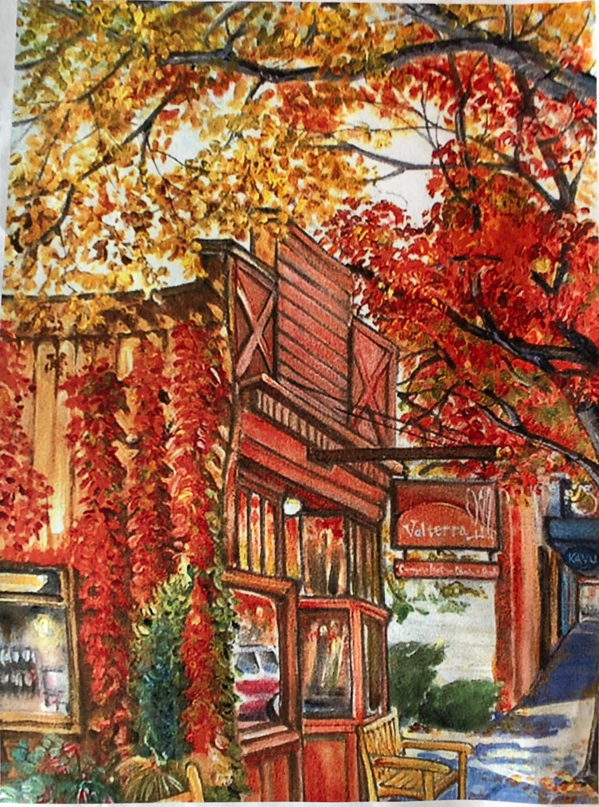
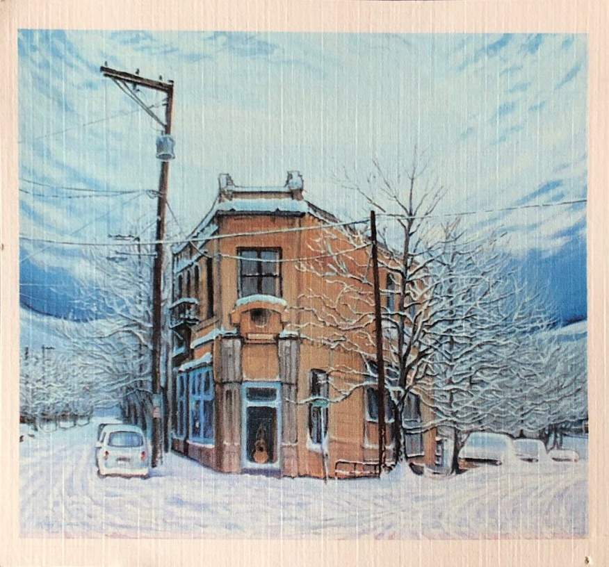
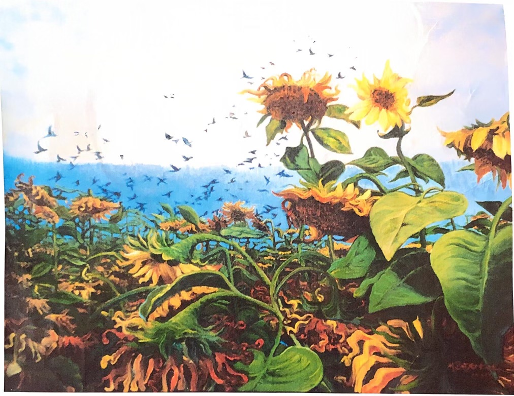
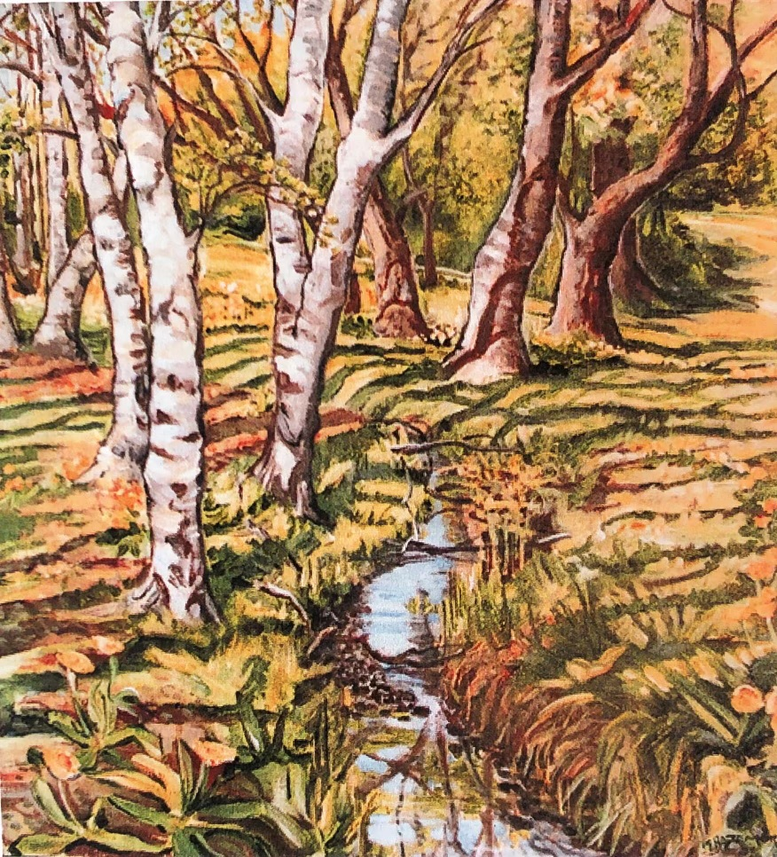
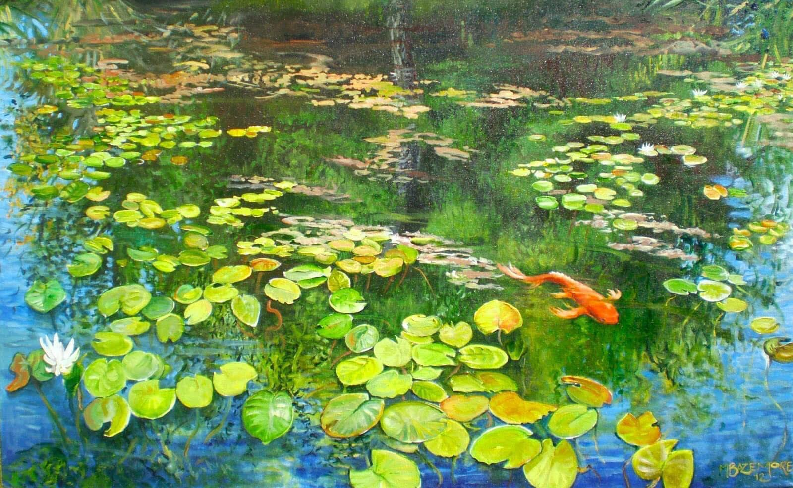
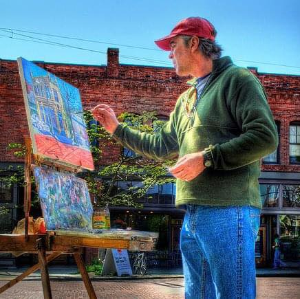

Plein air painter
Seattle • Ballard
One of the wonderful parts about living with Matt's paintings is that I see new things every time I look at the picture. There are so many dimensions, so many little areas of magic, that I rediscover his work constantly.






Painting on Ballard Avenue
Matt Bazemore is a Washington native who relocated to the Seattle area in 1966. A fine arts graduate of Western Washington University who also studied at the School of Visual Concepts in Seattle, Matt is a plein air painter working primarily in acrylics.
Known for his bold palette and richly layered compositions, Matt's work captures the Pacific Northwest — its urban streetscapes, rural landscapes, and the quiet beauty of places that are slowly vanishing. His deep connection to Ballard, where he has lived and painted for years, is at the heart of his practice.
“Everything I need is right here in Ballard.”
Matt became a full-time professional artist in 2004 after years of painting alongside his work in landscaping and at Daniel Smith Artist's Materials. His paintings of Ballard Avenue, Golden Gardens, trains, and old Americana architecture have been exhibited at venues throughout Seattle, including Miro Tea, Darrell's Tavern, and the Ballard Historical Society's 30th anniversary celebration at Hattie's Hat.
He is a regular participant in the Ballard Art Walk and has received commissions from Ballard businesses including Madame K's and Cugini Cafe.
Before dedicating himself to painting full-time, Matt's art career began in the Seattle metal scene of the 1980s. He created the cover illustration for Queensrÿche's debut album The Warning (1984) and the original artwork and logo for Heir Apparent's Graceful Inheritance (1985) — his cover concept was later featured on the 30th Anniversary Edition LP reissue.
Beyond painting, Matt has created black light artworks — gesso and ultraviolet tempera on black paper — depicting early 1970s rock musicians.
Matt is also a talented drummer who has played since high school. He and his brother Don Bazemore Jr. performed together in Matt the Hoopla.